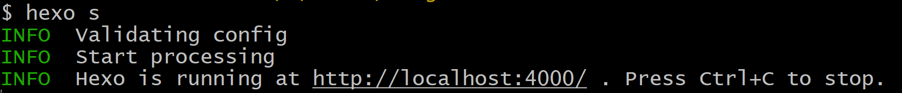

Hexo搭建个人Blog
前置知识：
- 有 Github 账号
- 使用过 git
1 配置 Github SSH 登录
配置 SSH key 是为了能够远程登录到 Github，公钥登录就省去了输入密码的步骤，所以我们选择公钥授权
1.1 获取本机公钥
输入如下命令后，连敲四下回车，会生成秘钥 id_rsa 和公钥 id_rsa.pub.
1 | ssh-keygen -t rsa |
获取公钥内容
1 | cd ~/.ssh |
将返回的内容复制下来
1.2 配置 Github SSH key
按下图操作：
完成后点绿色按钮
1.3 验证是否正确配置 SSH key
输入
1 | ssh -T git@github.com |
正常则会返回：
1 | The authenticity of host '[ssh.github.com]:443 ([20.205.243.160]:443)' can't be established. |
这里输入 yes 后回车
1 | Warning: Permanently added '[ssh.github.com]:443' (ED25519) to the list of known hosts. |
出现上面这段话则说明配置成功
如果报错：
1 | ssh: connect to host github.com port 22: Connection timed out |
GitHub 的默认 SSH 端口（端口 22）可能被防火墙或 ISP（Internet Service Provider）阻塞。GitHub 为此提供了一个备用端口 443
修改 SSH 配置来强制 Git 使用端口 443 进行连接
打开或创建 ~/.ssh/config 文件，写入：
1 | Host github.com |
之后再重新执行：
1 | ssh -T git@github.com |
2 搭建本地 Blog
2.1 安装 Node.js
直接官网下载，一路 next 安装，只需要修下路径（记住这个路径）
安装完成后打开 cmd 窗口，输入 node -v 和 npm -v 命令检查版本，返回版本号则说明安装成功
2.2 重新设置包安装路径（非必要）
如果不设置的话，安装模块的时候就会把模块装到C盘，占用C盘的空间，并且有可能安装好hexo后却无法使用
参考 https://zhuanlan.zhihu.com/p/105715224 完成
2.3 安装 hexo
注意要使用管理员权限打开终端
1 | npm install -g hexo-cli |
创建一个 blog 文件夹专门存放个人 blog 文件，进入该文件夹，输入如下命令，分别是初始化，静态部署，查看网页
1 | hexo init |

复制网址到浏览器打开即可预览到 blog 界面

Ctrl+C 停止运行本地服务
3 将本地 Blog 推送到 Github page
官方文档： https://docs.github.com/en/pages/quickstart
在 Github 中选择新建仓库，注意：
- Repo name 必须是 username.github.io(username 改成自己用户名)
- 权限必须是 Public
- 添加 README file
创建完毕后拷贝仓库的 SSH 链接
在本地部署 Blog 内文件夹找到 _config.yml 文件
打开后将最后一栏修改为：
1 | # Deployment |
之后在 Blog 文件夹内打开终端：
1 | npm install hexo-deployer-git --save |
安装完成后输入如下命令，依次清楚缓存文件和已生成的静态文件(hexo clean)，生成网站静态文件(hexo generate)，部署到 Github 仓库(hexo deploy)
1 | hexo clean #清除缓存文件 db.json 和已生成的静态文件 public |
之后浏览器打开 https://username.github.io 就可以看到网页了
4 将自己购买的域名与 Github Page 绑定
4.1 将自己购买的域名解析到 Github page
先去万网购买一条域名： https://wanwang.aliyun.com/
.top的最便宜，一年有的只需要 15￥
购买后需要完成实名验证，注册局审批后才可使用
两种解析都添加上：
- 域名到域名
- 域名到 ip
Github page 的域名就是username.github.io
ip 获取方法也可以通过ping Github page 的域名获取：
1 | ping username.github.io # username是你实际的名字 |
图中方括号中的就是Github page 域名对应的 ip
下面列出了所有可能的 ip，连带着到域名的解析，都给解析上
1 | 185.199.108.153 |

4.2 Github page 设置 Custom domain
到 Blog/source 文件夹下，创建 CNAME 文件，注意无后缀，写入买到的域名，保存关闭
移动到 Blog 文件夹下，将这套命令再执行一遍
1 | hexo clean |
打开 Github Page 页面，CNAME 文件被读取，自动设置了 Custom domain
至此可以通过购买的域名访问个人 Blog，如果不行，则清空一下浏览器 DNS 缓存
5 Blog 基本操作和配置
5.1 主题配置
https://hexo.io/zh-cn/docs/themes
网站下有许多主题，跟着主题的 README 或者官方文档（https://hexo.io/zh-cn/docs/configuration）配置即可
5.2 一些基本操作
5.2.1 创建一篇新文章
1 | hexo new "文章名" |
5.2.2 删除某篇文章
在 source/_posts 文件夹下删除该文章与对应的资源文件即可
5.2.3 管理markdown中的图片
https://hexo.io/zh-cn/docs/asset-folders
hexo 官方文档介绍了几种加入图片的方式，个人推荐将图片按照文章进行组织，并设置自动解析 markdown 链接
在 /_config.yml 中修改如下设置
1 | post_asset_folder: true |
该设置允许新建文件时自动新建一个同名的存放资源的文件夹
安装 hexo-renderer-marked 用于自动解析 markdown 文件：
1 | npm install hexo-renderer-marked --save |
在 /_config.yml 中进行如下设置：
1 | post_asset_folder: true |
如果你使用的是 typora，将其对图片的管理设置为如下：
写 Blog 时正常粘贴图片到 md 文件中，写完发布时，图片全都会在 .md 文件所在目录下，将其全部移动到与 md 文件同名的资源文件夹后进行发布，图片将会正常显示
5.2.4 未生成categories和tags index 页的问题
参考： https://blog.bombox.org/2016-04-28/hexo-no-generate-categories-tags-index-page/
在 Blog 根目录下打开终端
1 | hexo new page categories |
会在 source 文件夹创建两个文件夹 categories, tags，并分别创建 index.md 文件
在 index.md 文件 Front-matter 加上 type 标签，编辑完后分别如下：
1 | title: 分类 |
1 | title: 标签 |
重新执行 hexo g 进行生成即可
5.2.5 数学公式无法正常渲染的问题
本质是渲染网页，引擎会把一些特殊的 markdown 符号转换为相应的 html 标签，导致数学公式解析出错
解决办法参考 https://blog.csdn.net/yexiaohhjk/article/details/82526604
卸载 marked，安装 kramed
1 | npm uninstall hexo-renderer-marked --save |
在 Blog 目录下找到 node_modules\kramed\lib\rules\inline.js
修改 line 11 和 line 20：
1 | //escape: /^\\([\\`*{}\[\]()#$+\-.!_>])/, |
1 | //em: /^\b_((?:__|[\s\S])+?)_\b|^\*((?:\*\*|[\s\S])+?)\*(?!\*)/, |